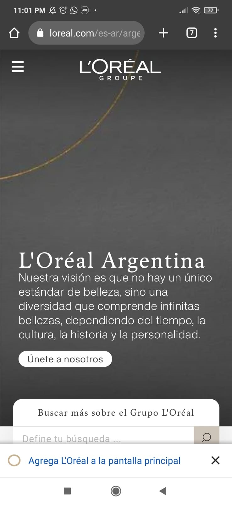
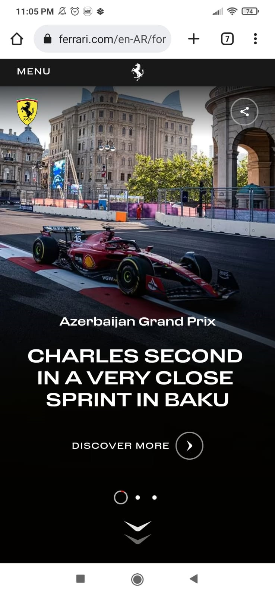

White Space
Company: LÓreal
https://www.loreal.com/es-ar/argentina/

The brand used the space in a very intelligent way, and the design principle of the space is well-marked. They used this principle to give the idea that they are a sophisticated brand, that they don't need to fill the website with a thousand things, because they have the space to simply show elegance, the same idea they have with their products.
Contrast
Company: Ferrari
https://www.ferrari.com/en-EN/formula1

Ferrari is a brand that marks a lot with its colors, the black contrast with red and yellow come to mind when we think of the brand. When entering your website, clearly the contrast of the central image, and the gradient of the photo to black and white letters all make it a page with clear contrast and very well done.
Repetition
Company: Lego
https://www.lego.com/en-us/
The Legos that are at the bottom of the page clearly shows elements that, although they are not the same, repeat the pattern of a Lego and a word that suggests the principle of repetition. That is the main reason why repetition is a principle apply in this page.